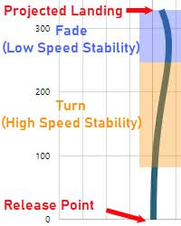

Disc golf was created in the late 1970’s, originally played with regular frisbees. As the game evolved, specialized discs were created to suit the needs of different shot shapes and player needs. Now, there hundreds of different types of discs that all act very differently when thrown. There are 3 main types of discs, with many subtypes. The 3 types are drivers, midranges, and putters. The main difference between the 3 is the distance which they can be thrown. Drivers being the farthest, and putters being the shortest.
If you're just starting out, it is best to stick to simply midranges and putters. While it may be tempting to use drivers off the tee and try to get huge ditance, sticking to only a few midranges and putters at first will imporve your form tremendously and reduce the possibility of injury.
There is a common misconception that certain discs are better than others. Discs are all equally as good, it just comes down to what you prefer and what compliments your playing style the most. What differentiates discs from eachother is their feel and their flight numbers.
If you look closely on most discs, there is a set of 4 numbers. These numbers are values that give an idea of how the disc will fly. These four numbers are speed, glide, turn, and fade.
The first number, speed, can range anywhere from 1-14. This number is ultimately the measure of how far the disc will go, but it also must be thrown with corresponding power.
The second number, glide, determines how quickly the disc will want to reach the ground when nearing the end of its flight. This number usually ranges from 1-7.
High speed turn refers to the degree of which the disc will want to turn to the right when flying at high speeds. This number ranges from 0 to -4. -4 being a disc that will turn to the right a lot.
Low speed fade refers to how the disc will act when nearing the end of its flight. Naturally, on a right-handed backhand throw, the disc will fade back to the left when it loses its rotational speed. The number, ranging from 0 to 4, determines how quickly the disc will reach the end of its flight and start fading out to the left. A disc that has capabilities to do an “S curve” in the air can be advantageous to clear obstacles and get maximum distance.
The flight number system can be very overwhelming and confusing, but the more you throw your discs, the more it will make sense. It is important to start with lower speed discs such as midranges and not focus so much on distance, but more so on angle control and accuracy. The angle that the disc is thrown affects the flight tremendously.